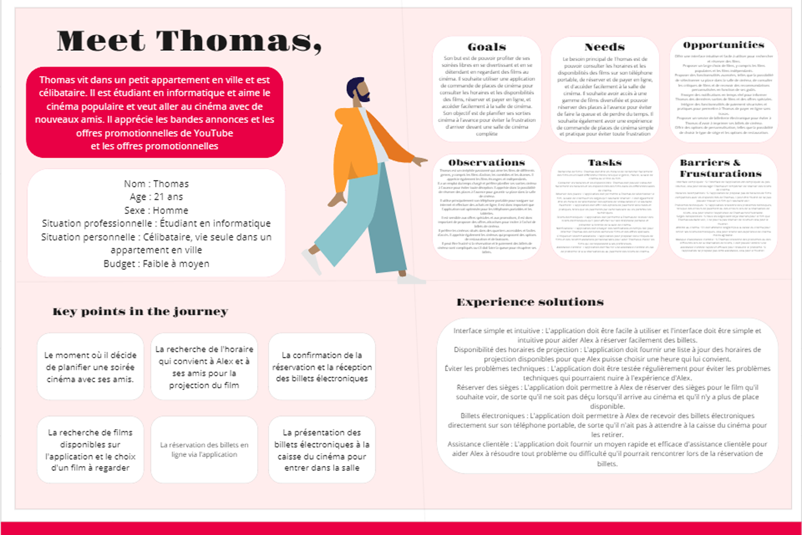
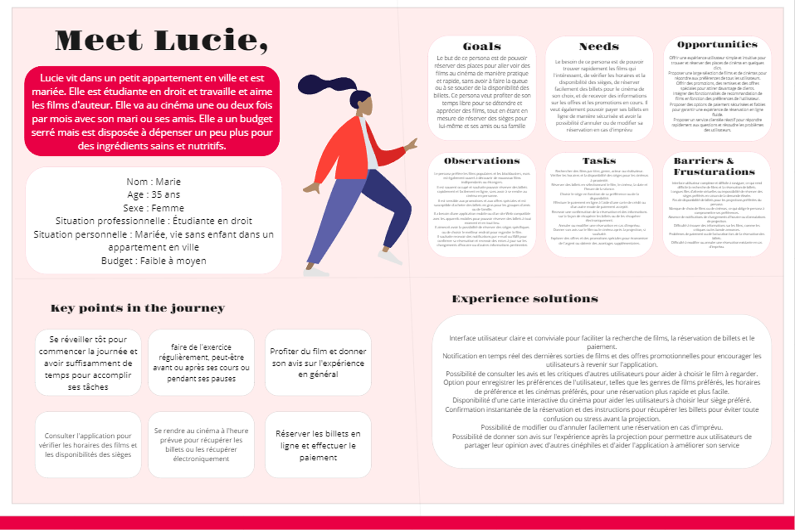

UI DESIGN
Figma
Maquettes & composants.
Design Thinking · Design Basse Fidélité · Design Haute Fidélité
Movie Pass est une application conçue pour répondre aux amoureux du cinéma qui souhaitent commander rapidement et facilement leur place de cinéma.

Refonte V2 — j'ai repris ce projet pour retravailler entièrement la direction artistique et la structure de l'application, avec une identité "cinéma premium" (Noir) et un vrai design system réutilisable.
Avant de dessiner le moindre écran, j'ai défini deux profils types à partir de l'audit concurrentiel et de courts entretiens utilisateurs, pour identifier leurs attentes et leurs freins face à la réservation de place de cinéma en ligne.


Avant de reprendre l'identité visuelle, j'ai retravaillé la structure de chaque écran en niveaux de gris : hiérarchie de l'information, zones de contenu, emplacement des actions principales. Cette étape permet de valider l'organisation avant d'investir du temps sur le visuel final.


J'ai ensuite appliqué l'identité "Noir" (fond sombre, rouge cinéma, typographie éditoriale) et un vrai design system de composants réutilisables, pour aboutir à une interface cohérente sur tout le parcours : découverte, fiche film, réservation et compte.


En basse fidélité, le choix du jour de séance imposait de comparer plusieurs cases sans repère visuel clair.
La séance du jour est mise en évidence par défaut, et les informations film/avis sont regroupées en onglets pour réduire la charge de lecture.
Pour garantir la cohérence sur l'ensemble du parcours, j'ai formalisé un design system : palette de couleurs, typographie éditoriale (display en serif italique), échelle d'espacement/radius, et une bibliothèque de composants réutilisables (boutons, champs, cartes, sélecteurs de séance et de siège).


Ce projet m'a permis de mesurer l'importance de tester tôt, avant même d'avoir un visuel abouti : les ajustements les plus utiles sont venus des retours sur le prototype basse fidélité, pas de la phase de design final.
Accédez au prototype Figma interactif.
Voir le prototype FigmaUI DESIGN
Figma
Maquettes & composants.

Assets
Photoshop
Retouches visuelles.

Organisation
Drive
Documentation & partage.

Idéation
Miro
Brainstorming & parcours.